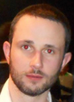

12 années dans le secteur horloger où j'ai pu occuper des postes de régleur CN, prototypiste mouvement et programmeur CN.
Élaborer un outil de communication numérique c’est à dire concevoir un site ou une application web, réaliser la partie graphique, réaliser des maquettes et des interfaces, élaborer une animation pour différents supports de diffusion Réaliser un outil de communication numérique en intégrant des pages web et en tenant compte des standards, du référencement, de l’accessibilité et de l’ergonomie, en adaptant des systèmes de gestion de contenus et en publiant des pages web Contribuer à la gestion et au suivi d’un projet de communication numérique c’est à dire assurer une veille technique et concurrentielle, contribuer à l’élaboration d’un cahier des charges pour différents types de sites, Optimiser en continu un site ou une application web